About Graphic
Beberapa Anime dengan Grafik yang Wow...
Fact From Me..
Hai friends Anime lovers sekarang saya akan memberitahukan Anime yang menurut saya grafik nya itu WOW banget. Maksud nya WOW adalah grafik nya yang eren dan kita tidak jenuh melihat nya.
Saya menulis artikel ini dengan pengalaman menonton saya sendiri dan sekarang saya akan membagikan ke kalian semua tentang ini.
Oke friends kita langsung lihat saja kebawah, jangan malas membaca ya :)
1. Tokyo Ghoul
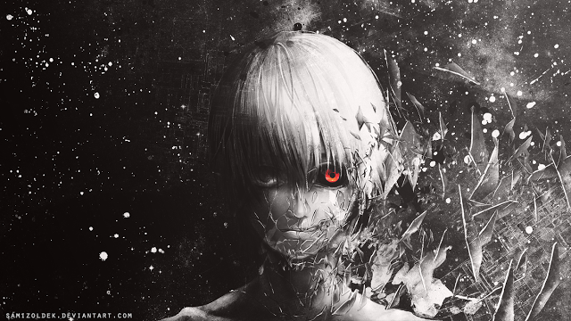
Menurut saya Anime yang satu ini adalah anime yang sangat Populer di Kalangan Pecinta Anime, Anime ini Cerita nya sangat bagus, Dan sangat Seru dan Selain itu Grafik nya sangat Keren menurut saya, Tokyo Ghoul Sendiri Mempunyai 2 Season.
Bercerita dimana di dunia ini ada mahkluk lain yang hidup berdampingan dengan manusia yaitu Ghoul. Ghoul merupakan mahkluk buas yang hanya bisa memakan daging manusia sebagai makanannya.
"fokus cerita ditujukan pada Kaneki yang merupakan Anak Pemalu, Suatu hari Dia Bertemu Perempuan di Sebuah Kedai Kopi yang Bernama Rize, Ketika Kaneki Mengantarkan Rize pulang kerumah nya, Ternyata Perempuan yang Bernama Rize itu Adalah Ghoul, Dan seketika di waktu yang Sepi perempuan yang bernama Rize Menyerang Kaneki, Ketika Rize Hendak memakan Kaneki, Ada sebuah balok yang Menimpa Si Rize, Sehingga di bawa ke Rumah sakit, dan disitulah Awal Kaneki Berubah menjadi ghoul di karenakan Organ Tubuh Rize di Cangkok Kedalam Tubuh nya Kaneki".
2. Fate/Stay Night Unlimited Blade Works
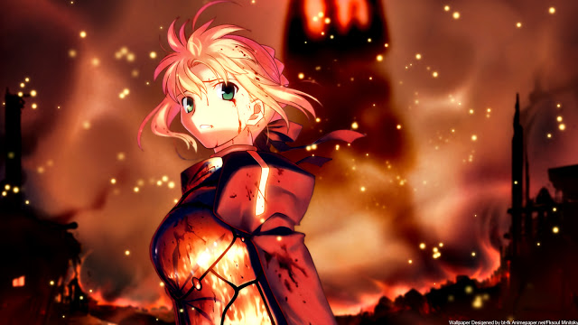
Fate Stay Night UBD/ Fate Stay Night Unlimited Blade Works bisa di Bilang Salah satu Anime EPIC Karena di dalam Anime ini Berisi Karakter karakter yang sangat Keren yang Membuat kita tidak bosan bosan nya Melihat Karakter Tersebut
Berikut adalah beberapa potret karakter yang ditampilkan.
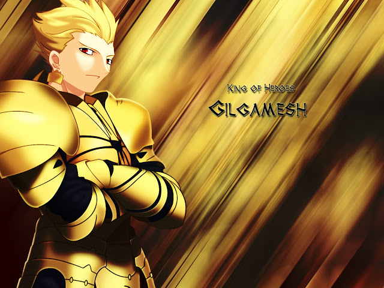
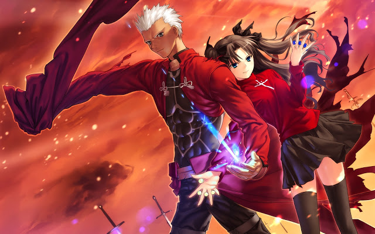
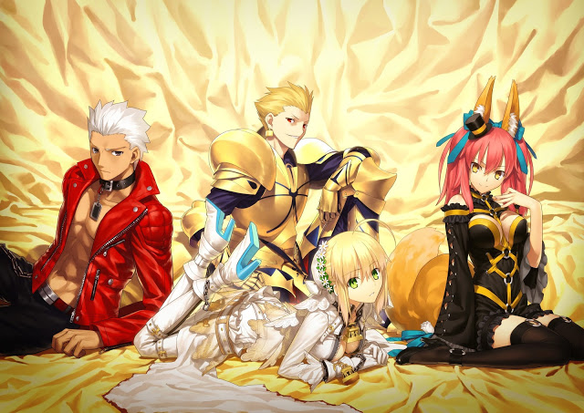
3. God Eater
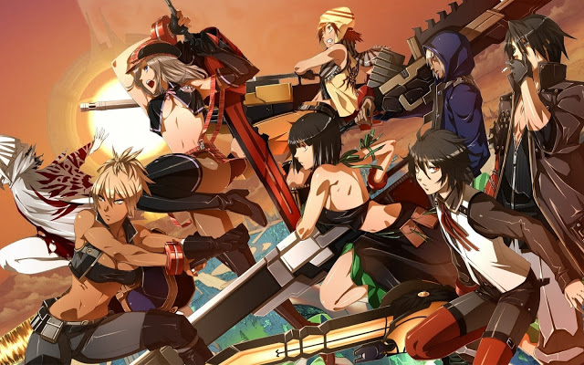
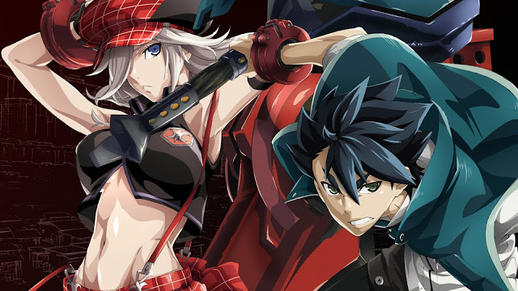
Anime God Eater merupkan anime yang diadaptasi dari game besutan Bandai Namco dengan judul yang sama.Genre Anime ini adalah Action,Demons,Fantasy,Supranatural dan military. Sebelum anime rilis tahun 2015 ini ada debut seri sepesial pada tahu 2009 dengan judul "God Eater Prologue"
Cerita Ini Menceritakan Tentang dimana sekelompok manusa melindungi kawanan monster bernama Aragami. Makhluk raksasa ini beragam bentuknya bahkan ada yang sangat besar dan terbang.Mereka memakan segalanya, menghancurkan tempat tempat manusia dan dapat berevolusi dengan cepat. Banyak manusia yang musnah diakarenakan Aragami ini.
Sebuah Organisasi yang dikenal sebagai Fenrir berkerja keras untuk memusnahkan Aragami. Organisasi ini menggunakan senjata yang disebut God Arcs yang terbuat dari sel sel Aragami. Senjata God Arcs digunakan untuk orang-orang yang terpilih yang disbut "God Eater". Tokoh utama disini adalah Lenka Utsugi seorang God Eater Tipe Baru. Tokoh Lainnya adalah Lindow Amamiya,Soma Shicksal,Sakuya yang merupakan Kelompok God Eater tipe lama dan Senior.
4. K Series ( K-Project , K-Missing Kings , K-Return Of The Kings )
 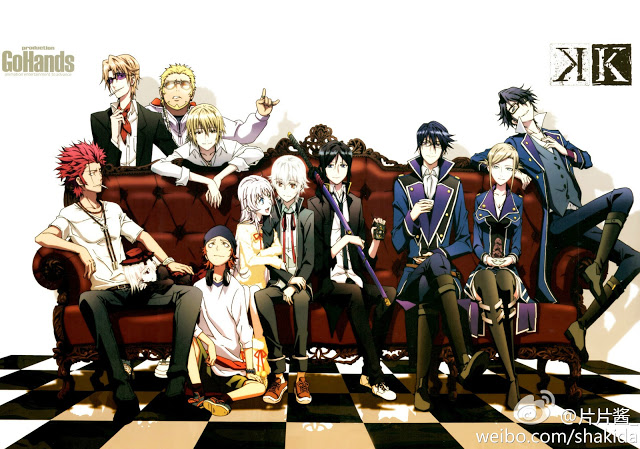
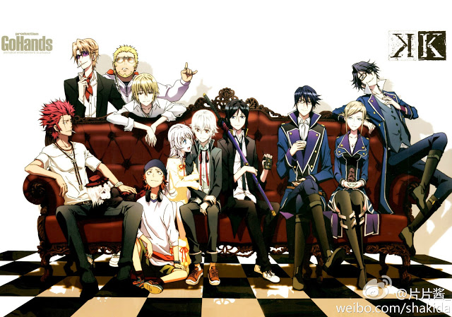
Anime series K-Project adalah Season 1 , K-Missing Kings adalah Movie-nya yang menjadi penengah cerita, dan K-Return Of The Kings adalah Season 2 beserta akhir ceritanya. Untuk kalian yang ingin menonton Anime ini, saya sarankan agar menontonnya dengan urutan diatas.
Sebelum itu, saya akan jelaskan dunia 'K' dulu oke ?. Jadi di Jepang yang modern sebenarnya dipimpin oleh 7 raja sesuai dengan tugasnya masing-masing, tiap Raja memiliki simbol kekuatan yaitu Pedang Damocles. Meskipun di Jepang ada perdana mentri yang memegang kekuasaan tertinggi tapi sebenarnya yang menghidupkan Jepang adalah ketujuh raja tersebut, orang awam nggak bakal tahu kalo ada 7 raja yang sebenarnya memimpin Jepang, hanya sebagian orang yang tahu. Kalo ada raja, pasti ada pengikutnya kan ?
K - Project
Yang paling di munculkan pada K - Project ( Season 1 ) adalah Raja Pertama yaitu Ishana Yashiro ( Adolf K Weismann) Sang Raja Perak, Raja Ketiga yaitu Suoh Mikoto sang Raja Merah yang paling kejam dari seluruh raja tapi hatinya lembut, nama Klan-nya adalah Homra dan Raja Keempat yaitu Munakata Reisi Sang Raja Biru, nama Klan-nya Scepter 4. Di Season 1 ini cerita pada eps awal akan sangat membingungkan, tapi akan dikupas semua misterinya pada eps 7.
K - Missing Kings
Pada pertengahan Film atau Movie-nya yaitu K-Missing Kings bercerita tentang hilangnya Raja Perak dan munculnya Raja Merah yang baru yaitu Kushina Anna setelah kematian dari Raja Merah sebelumnya dan juga munculnya Klan Hijau dengan Sang Raja yang bernama Hisui Nagare
K - Return Of The Kings
Pada Season 2 menceritakan tentang awal mula terbentuknya Raja - Raja yang ada beserta dengan matinya Raja Emas ( Entah siapa namanya :v ) dan juga bersatunya Tiga Raja yaitu Raja Perak, Raja Merah, dan Raja Biru untuk melawan Raja Hijau dan Raja Abu - Abu.
5. Kyoukai no Kanata
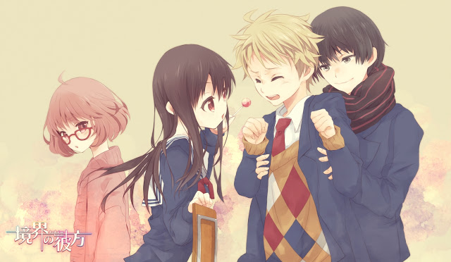
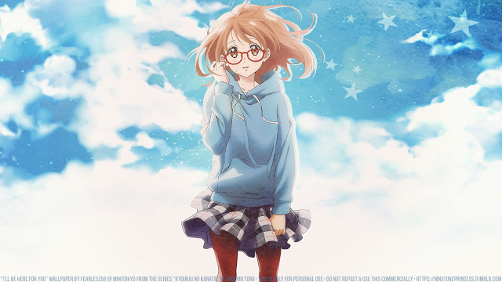
Kyoukai No Kanata adalah anime produksi Kyoto Animation bergenre action, supranatural, comedy, romance, dan slice of life. Yang membuat saya pertama kali tertarik dengan anime ini adalah karena produksi KyoAni, yang sudah terkenal. Apalagi genre actionnya yang dicampur dengan grafis khas KyoAni. Ceritanya juga menarik dan ringan, sangat recomended. Lanjut saja kita masuk ke cerita.
Awal episodenya yaitu seorang siswa kelas 2 SMA, Kanbara Akihito, melihat seorang gadis kelas 1 SMA sedang berdiri di atas gedung seakan-akan ingin bunuh diri. Entah apa yang mendorongnya, Akihito berlari ke atas gedung dan berusaha untuk menyelamatkan gadis tersebut dengan mengucapkan kata-kata yang ia bisa. Tiba-tiba, gadis tersebut melompat ke arah Akihito dan menusuknya dengan pedang. Herannya, Akihito malah tidak mati.
Plotnya cukup menarik sekali, apalagi menjelang ending. Anime fall 2013 ini sudah end dan memiliki 12 episode serta 3 episode ONA.
Note
Untuk grafik sebenarnya masih banyak yang bagus dan belum saya ketahui jadi mohon sarannya. Untuk Movies Anime tidak saya masukkan dalam list diatas karena list diatas memang hanya untuk Anime Series.
 |
Anime Season |
Hai Friends, kali ini saya akan membahas tentang Musim dalam rotasi rilis Anime, eitss Musim disini bukan berarti "Season 1 atau Season 2" melainkan rotasi munculnya Anime sesuai Musim yang ada di Jepang....... |
Read More.... |
 |
Anime Dengan Cerita yang Berkesan |
Hai Friends Anime Lovers, sekarang saya akan membagikan beberapa Anime dengan ceritanya yang menarik. Nominasi pertama anime dengan cerita yang unik menurut saya adalah anime....... |
Read More.... |
 |
Anime Dengan Cerita yang Membingungkan |
Hai Friends, kali ini saya akan memberikan info tentang beberapa Anime yang memiliki cerita membingungkan tapi menarik saat kita selesai menontonnya. Nah apa sajakah Anime tadi, langsung saja kita cuss ke bawah, jangan malas membaca yah... |
Read More.... |